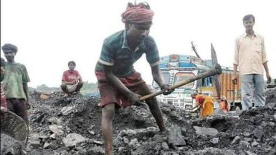

The bench further directed the state government to churn out final plans for auctioning and transportation of the over 31.26 lakh of already extracted coal lying across different parts of the state
 1, 2, 3 hindustantimesThe directions came on Monday, for which the entire order was released on Tuesday. (File image)
The Meghalaya high court directed the state government to initiate a detailed procedure for allowing mining of coal in the hill state.
During the hearing a PIL on the matter, a bench headed by chief justice Sanjib Banerjee in its order said, “A comprehensive process may be initiated by the State government, at its discretion, for permitting mining of coal upon due adherence to the provisions of the (MMDR) Act of 1957.”